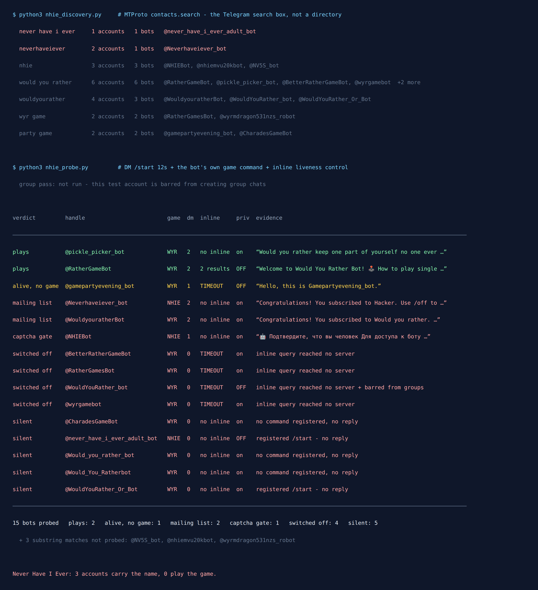

Never Have I Ever Telegram Bot? I Found None That Play
Never Have I Ever needs no explanation, no board and no app. Somebody says a thing they have never done, everyone who has done it admits it, and the evening takes care of itself. It is the easiest game in the world to put in a group chat — which is why I expected Telegram to have five bots for it.
It has none.
On 13 September 2026 I asked Telegram itself, not a directory, which bots exist for this game. Three accounts carry the name. Not one of them plays. One answers with a “confirm you are human” button that leads somewhere else entirely, one signs you up to a broadcast list, and one — the only account that is actually about the game — never replies at all. Meanwhile the neighbouring game, Would You Rather, has two bots that work fine.

Why I asked Telegram instead of a directory
The last three times I did this — quiz bots, download bots, Truth or Dare bots — the handle list came from web directories. That method has a built-in flaw: a directory entry outlives the bot’s server by years. Nobody goes back to delete the listing when the program stops running, so the list you are reading is a record of bots that once existed.
So this time the list came from the platform. The MTProto method behind the Telegram search box is contacts.search, documented as returning “users found by username substring” (core.telegram.org). It only returns accounts that exist right now. I fixed seven queries before measuring anything — the phrasings a player would actually type, plus the two acronyms — and took every bot account each one returned:
never have i ever→ 1 account, 1 botneverhaveiever→ 2 accounts, 1 botnhie→ 3 accounts, 3 botswould you rather→ 6 accounts, 6 botswouldyourather→ 4 accounts, 3 botswyr game→ 2 accounts, 2 botsparty game→ 2 accounts, 2 bots
That is 18 distinct bot accounts. Three of them matched only as a substring and are plainly something else — two Vietnamese ad-watching earners that matched nhie inside nhiem vu, and a casino link farm that matched wyr — so they are recorded with that reason and not probed. The remaining 15 each got the same three reads: a direct message with /start, then the bot’s own first game command taken from the list it registered with BotFather rather than one I guessed, then an inline query as a liveness control.
Notice what the first line of that list already tells you. The most natural search a person can type for this game returns one account in the whole of Telegram.
Never Have I Ever: three names, no game
Here is what the three accounts carrying the name actually do.
@never_have_i_ever_adult_bot is the only one whose description is about the game: an 18+ Russian version where whoever has done the thing takes a drink. It registered /start and /help with BotFather, so at some point there was a program behind it. It did not answer /start. It has inline mode switched off, so I have no second test, and I am calling it silent rather than dead — that distinction matters and I will come back to it.
@NHIEBot is the shortest, most valuable handle of the set, and it has been repurposed. Its display name is a redirect notice pointing at an unrelated channel, and its answer to /start is a human-verification screen: “Confirm that you are human — press the button below for access to the bot.” I did not press it. Whatever is behind that button, it is not Never Have I Ever.
@Neverhaveiever_bot is the one I would have clicked first, and it is a mailing list. Its display name is “Hacker”. Two messages came back in twelve seconds:
Congratulations! You subscribed to Hacker.
Use /off to pause your subscription.
Want to create your own bot?
Go to @Manybot
That second line is the tell. Manybot is a builder that turns a Telegram bot into a broadcast channel with no code at all, and somebody used it to park a game name on a subscriber list. The exact same pattern showed up on the Would You Rather side: @WouldyouratherBot answers with “Congratulations! You subscribed to Would you rather” and the same Manybot footer. Two good game handles, two mailing lists.
So the score for the game the whole post is named after: three accounts, zero games.
Would You Rather is the opposite: two that work
Nine handles came up for Would You Rather, and two of them play properly — which is worth knowing, because it is the closest game to Never Have I Ever in shape. Both are a prompt plus a binary choice.
@RatherGameBot is the better one for a group. Its welcome message explains single-player use (/next, /nsfw), then group use (/next@RatherGameBot), then inline. /next returned a real question immediately — “Be an average person in the present” against “Be a king of a large country 2500 years ago” — with two buttons to vote with. Its inline query answered with two results, “Get Question” and “Get Question (18+)”, so it works in a chat you have not added it to. Two caveats: the 18+ set is one command away from the family-friendly one, and its privacy mode is off, which I get to below.
@pickle_picker_bot is the richer single-player experience: a question feed, categories, curated collections, AI-generated questions and a suggestion box. It sent a question with A/B buttons and a Next arrow straight after /start. It has no inline mode and does not document group commands, so it reads as a bot to scroll on your own rather than one to run an evening with.
The other seven are the usual long tail. @BetterRatherGameBot is inline-only by design — its display name literally starts with “(inline)” — and its inline query timed out, which for an inline-only bot means there is nothing left of it. @RatherGamesBot has the fullest command list of the whole set (/set_category, /askme) and answered nothing at all. @Would_You_Ratherbot is not a game: its description is a wall of links to pirated 1080p films. @gamepartyevening_bot replied exactly once, with “Hello, this is Gamepartyevening_bot.”, and had nothing else to say.
Try the free game first
Truth or Dare, Never Have I Ever and Would You Rather, with 151 questions per language, English and Ukrainian, no signup and no backend that can be switched off. Open it in the chat and start a round.
Open the Party Game No Telegram? It runs in a browser too: charliemorrison.dev/party-game“Silent” and “switched off” are different verdicts
A bot that ignores you looks identical to a bot that no longer exists. The username, the profile picture and the command menu all survive the server being turned off, so /next still autocompletes as you type it into a chat where nothing is listening.
There is one test that separates the two, and it is why the census has an inline column. Telegram forwards an inline query to the bot’s own server and waits for the answer, so a running server replies with results and a stopped one produces a timeout. Four bots timed out: @BetterRatherGameBot, @RatherGamesBot, @WouldYouRather_bot and @wyrgamebot. Those I am willing to call switched off.
Five others — including the 18+ Never Have I Ever one — never enabled inline mode, so Telegram refuses the query before it goes anywhere. That is no signal, not proof. They stay silent, cause unknown. A bot can also be built to answer only in groups and ignore private chats entirely, which is a design choice, not a fault, and the group test that would tell them apart is the one test I could not run.
There is one more number Telegram publishes that almost nobody looks at. The bot account object carries a field described in the API schema as “Monthly Active Users (MAU) of this bot (may be absent for small bots)” (core.telegram.org/constructor/user). Of these 15 bots, exactly one exposes it: @RatherGamesBot, with 3 monthly active users — and it is one of the four that answered nothing. For the other 14 the field is absent, and per that same sentence absence means small, not zero. Either way, nothing in this set is a busy product.
What the account flags say before you add anything to your group
Two flags on the same object are worth checking on any bot you are about to put in a chat with friends, and both are readable without messaging it:
- “Can the bot see all messages in groups?” — this is privacy mode, and when it is off the bot receives every message in every group it is in, not just the commands addressed to it. Four of the 15 have it off,
@RatherGameBotamong them. For a game bot that is usually a convenience choice, so it can watch for answers. It still means a stranger’s server reads the whole room. - “Can the bot be added to groups?” —
@WouldYouRather_botis flagged as barred from groups entirely. A party game that cannot join a party is worth knowing about before you try.
How to run Never Have I Ever with no bot at all
Since the bots do not exist, here is the thing I actually do, and it is better than a bot for a reason that has nothing to do with uptime: nobody has to admit anything out loud.
Each round is a two-option anonymous poll. The question is the prompt (“Never have I ever missed a flight”), the options are I have and I have never. Anonymous results turn the game from a confession into a headcount, which is where the laughing actually starts — five of six people voting “I have” is funnier than any single answer. Any member can create a poll, no admin rights and no third party added to the chat.
Three mechanics matter. The two character limits I measured myself on this account when I wrote up Telegram’s poll limits; the pacing figure is Telegram’s own guidance, not mine, and I say which is which:
- Pace the rounds. Telegram’s bot FAQ puts the safe rate at roughly 20 messages a minute into one group. One poll every 15–20 seconds is a comfortable evening; firing ten at once is how you get throttled mid-game.
- Keep the prompt short. A poll question holds 300 characters and each option 100 — measured, not documented — which is plenty. But a long prompt on a phone pushes the buttons off-screen, and people vote on what they can see.
- Close the poll before the next one. Two open polls on the same wall means half the group votes in the old one. The game night guide has the rest of the chat mechanics that break first.
The prompts are the actual work. A search for a list will get you the same twenty mild questions everyone has already answered, and the ones that make an evening are specific, plausible and survivable. That is a writing problem, not a software problem, which is also why no bot fixes it.
Skip the writing: 255 prompts, ready to poll
The Telegram Party Pack is 255 group-chat prompts across six games — 45 Never Have I Ever statements in warm-up and spicy tiers, 30 Would You Rather dilemmas with both options pre-written, 110 Truth or Dare — as copy-paste text and ready-made poll blocks. No bot to add, no stranger’s server reading the room, nothing that can go quiet halfway through a round.
Get the pack — $9.99 Or start with the free party games list.What I could not test, said plainly
Three limits, because a census that hides them is just a list with confidence.
No group pass. These are group games and the right test is a real group chat. The account I test from is spam-reported and Telegram refuses to let it create chats at all — a permanent restriction since May — and I do not borrow strangers’ groups to experiment in. So group behaviour here is read from the typed flags and from what each bot documents about itself, and a bot that only talks in groups would show up as “silent” in my table. That is the weakest part of the method and it is the same gap I had on Truth or Dare.
Username substring, not semantics. contacts.search matches names and usernames. A bot that plays Never Have I Ever under a name like “PartyPal” would never appear in my results, which is exactly why the two Vietnamese earners did. So the honest claim is not “no such bot exists anywhere”. It is that a person searching Telegram for this game by its name finds nothing that plays it — which for anyone at nine in the evening is the same thing.
Twelve seconds, one attempt. Each bot got a twelve-second window per message. A server that woke up on the thirteenth second reads as silent here. Verdicts have a date on them for that reason, and if you are reading this months later, the fifteen-second test is /start yourself.
For a game this simple, the result is oddly consistent with the last three of these I ran: the gap between what the listings promise and what answers a message is not a Never Have I Ever problem. It is what a bot ecosystem looks like when the cost of abandoning a username is zero.